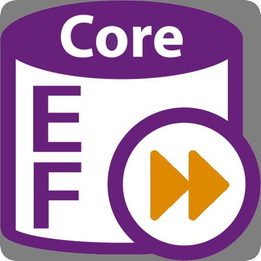
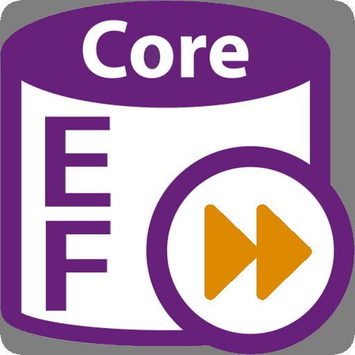

Bem vindos ao meu portfólio
Sou desenvolvedora Back-End Jr e estudante de ADS, buscando uma oportunidade. Tenho experiência profissional em C# .NET de 1 ano, sou iniciante na área e apaixonada por ela. Conhecimentos principais em: C#, .NET, MongoDB, MySQL, APIs.


Projetos Profissionais
- Como estagiária e Trainee tive participação desde a concepção, criação até a execução, manutenção e otimização de sistemas backend.
- Implementação de APIs REST, APIs BFF, e microserviços, utilizando C# .NET e Entity Framework.
- Integração com outras APIs externas , como a de pagamento Pix ❖ do Banco do Brasil.
- Desenvolvimento do Backend e criação de APIs para uma solução para o setor de restaurantes, incluindo:
- 💳 API BFF e fluxo de projeto para maquininhas de pagamento para realizar pedidos diretamente por ela e realizar os pagamentos.
- 🍔 API BFF e fluxo de projeto para um aplicativo de garçom digital , podendo fazer pedidos, escolher mesas, entregas de pedidos e etc (na qual tive a oportunidade de realizar sozinha).
- 🍽️ API e fluxo para o KDS (Kitchen Display System) para pedidos na cozinha em tempo real e para o Cardápio QR Code digital.
- 📊 API Rest e fluxo do projeto para um Site de gerenciamento das empresas, cadastro e gestão de produtos, funcionários, formas de pagamentos etc.
- Em todos os projetos teve a utilização de tecnologias como MongoDB, MySQL, AWS, Docker, Jenkins, Redis e RabbitMQ.
Skills
(Conhecimento Básico)


 


Sobre Mim
Meu nome é Raiany Cristina, tenho 20 anos e atualmente estou cursando o terceiro semestre da graduação em Análise e Desenvolvimento de Sistemas .
Estou em busca de uma oportunidade para aprender e crescer profissionalmente na área de Back-End Jr.
Já tive algumas experiências valiosas com c#, .Net. Trabalhei como Trainee, desenvolvendo APIs e utilizando Docker, AWS, WebSockets, Mensageria RabbitMQ, Redis, MongoDB, MySQL, jenkins, arquitetura DDD entre outras coisas.
Além disso, estou sempre buscando aprimorar meus conhecimentos com outros cursos extra curriculares.